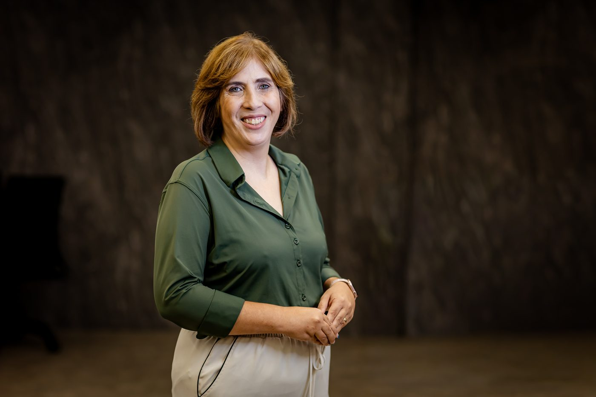
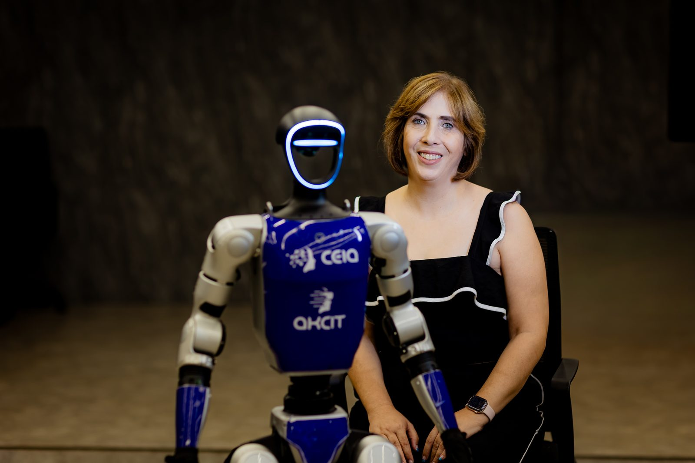
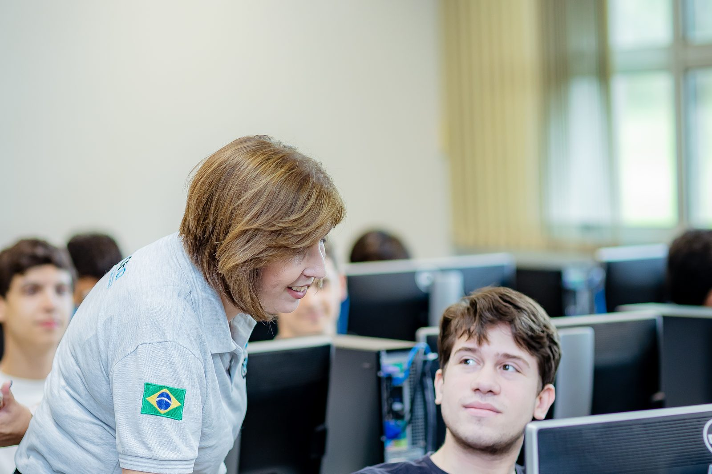
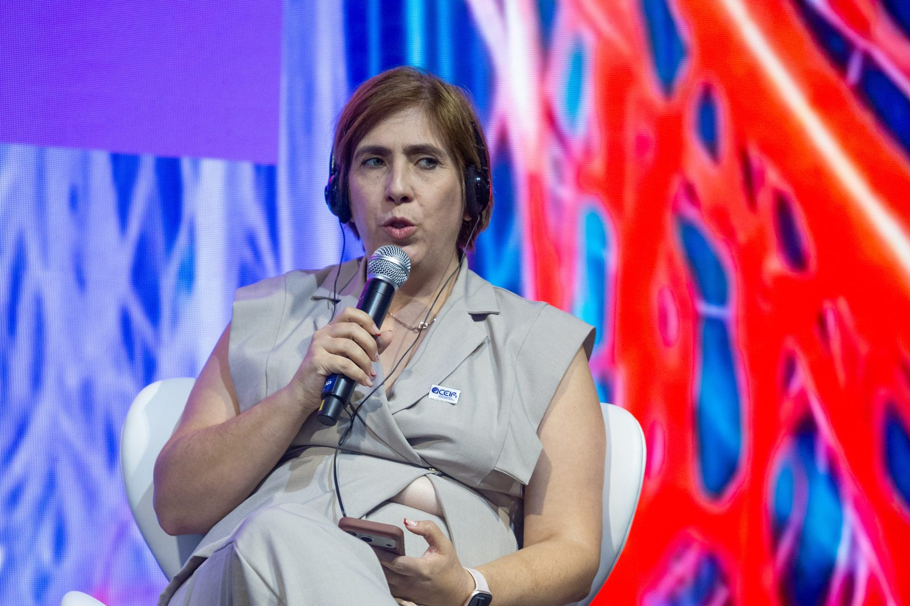

Inteligência artificial que sai do laboratório e chega ao Brasil real
Professora do Instituto de Informática da UFG, diretora executiva do CEIA e à frente de projetos que já captaram mais de R$ 500 milhões em parcerias de pesquisa, desenvolvimento e inovação.
Falar comigo no WhatsAppConte em poucas palavras o que você procura, empresa, pesquisa ou imprensa, e eu direciono para o time certo.
Cada perfil tem um caminho
Três públicos chegam até mim: empresas que precisam resolver um problema com inteligência artificial, pesquisadores que querem atuar nos projetos do CEIA e jornalistas que buscam uma fonte com atuação na pesquisa e na aplicação prática. O contato começa no mesmo lugar, o encaminhamento é diferente para cada um.
Projetos de PD&I em inteligência artificial
Avalio a sua demanda e direciono para a equipe adequada. O CEIA participa como coinvestidor nos projetos que desenvolve.
Oportunidades de atuação no CEIA
O melhor caminho para participar do CEIA é fazer o seu cadastro no nosso banco de talentos, pelo Portal CEIA.
Entrevistas e posicionamento sobre IA
Falo sobre pesquisa e aplicação de inteligência artificial no Brasil, com dados dos projetos que acompanho de perto. Me conte a pauta e o prazo, a assessoria de comunicação organiza a agenda.
O que já foi construído
Quatro ideias que vale corrigir
O CEIA é só academia
São mais de 150 projetos de PD&I executados com empresas e mais de R$ 500 milhões captados nos últimos 5 anos, boa parte com a iniciativa privada. A aplicação prática é o dia a dia do centro.
O CEIA só presta serviço, não faz pesquisa
Os projetos aplicados se sustentam em pesquisa de fato, com foco em meta-learning, aprendizado por reforço e otimização multiobjetivo com meta-heurísticas. Foi essa base que deu origem ao Bacharelado em Inteligência Artificial, pioneiro no Brasil.
Empresas não sabem que o CEIA coinveste
O CEIA entra como coinvestidor nos projetos de PD&I que desenvolve, ou seja, o risco e o investimento são compartilhados com a empresa parceira.
O processo é lento por ser universidade pública
[PENDENTE: definir uma frase ou dado concreto sobre agilidade de resposta, por exemplo prazo médio para a primeira reunião ou para a proposta]

Pesquisa, sala de aula e projetos com empresas, ao mesmo tempo
Há mais de 20 anos trabalho com inovação, tecnologia e inteligência artificial, e há mais de 13 anos sou professora do Instituto de Informática da UFG. Hoje dirijo o CEIA, o Centro de Excelência em Inteligência Artificial da UFG.
Atuo nas disciplinas de algoritmos e estruturas de dados, heurísticas e modelagem multiobjetivo, e aprendizado de máquina por reforço. Minha pesquisa tem foco em meta-learning, aprendizado por reforço e otimização multiobjetivo com meta-heurísticas. Fui pesquisadora principal em projetos de PD&I com a iniciativa privada que deram origem ao próprio CEIA e ao Bacharelado em Inteligência Artificial, o primeiro do país.
- Diretora executiva do CEIA desde 2022.
- Professora do Instituto de Informática da UFG há mais de 13 anos.
- Coordenadora dos Programas de Pós-Graduação Stricto Sensu do INF/UFG em três períodos, 2010 a 2011, 2015 a 2019 e 2019 a 2021. No segundo período, liderei a criação do curso de Doutorado próprio.
- Responsável pela Olimpíada de Inteligência Artificial Aplicada para alunos do 9º ano do ensino fundamental e do ensino médio. Coordenei a Olimpíada Brasileira de Robótica em Goiás até 2022.
Do laboratório à operação das empresas



[PENDENTE: confirmar as legendas das fotos, local, evento e ano de cada uma]
Depoimentos de parceiros
[PENDENTE: nenhum depoimento com texto literal de cliente ou parceiro foi fornecido até o momento]
Me conte o que você procura
Empresa, pesquisa ou imprensa, a conversa começa no mesmo lugar e eu direciono para o time certo.